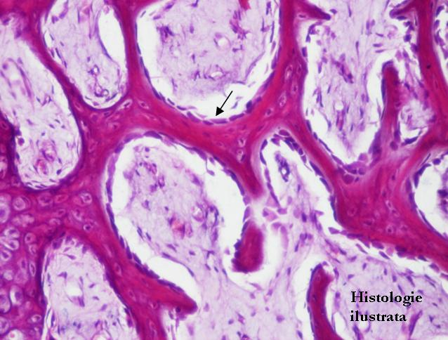
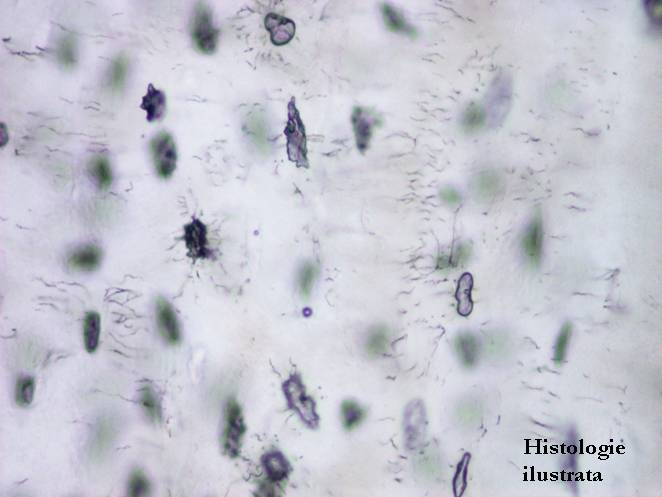
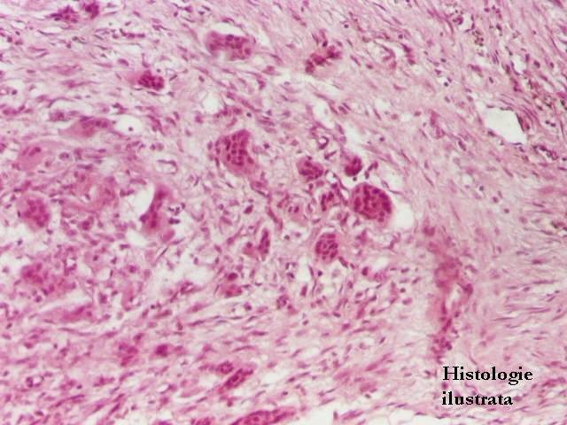
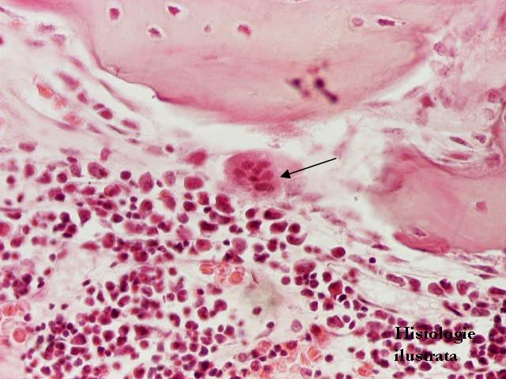
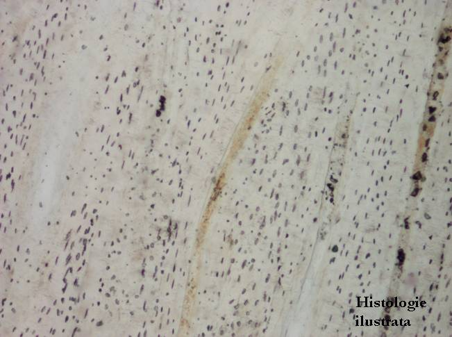
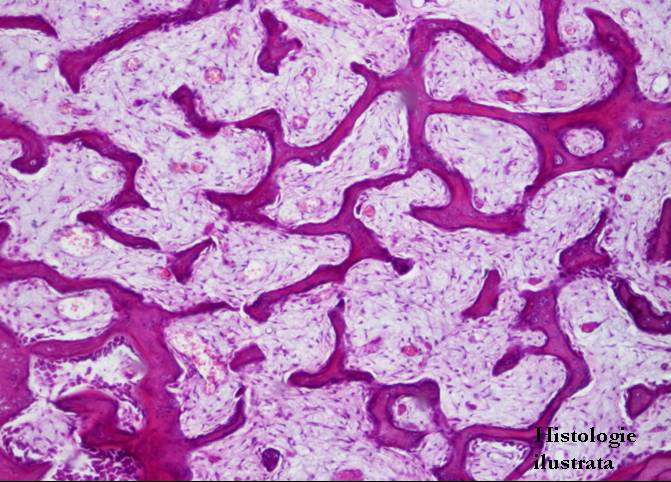

Chap.2 - Tissu conjonctif
2.2. Variétés de tissu conjonctif
Tissu conjonctif spécialisé - Tissu osseux - composants et histoarchitectonie




Fig. 100 - Ostéoblastes - os spongieux,
H.E. X 200
Fig. 101 - Cellules bordantes et ostéocytes dans les ostéoplastes – os spongieux, H.E. X 400
Fig. 102 - Ostéoplastes – os usé X 400
Fig. 103 - Ostéoclastes – H.E. X 200








Fig. 104 - Ostéoclaste – H.E. X 400
Fig. 105 - Os compact - ostéon en coupe transversale, os usé X 100
Fig. 106 - Os compact - ostéon en coupe longitudinale, os usé X 40